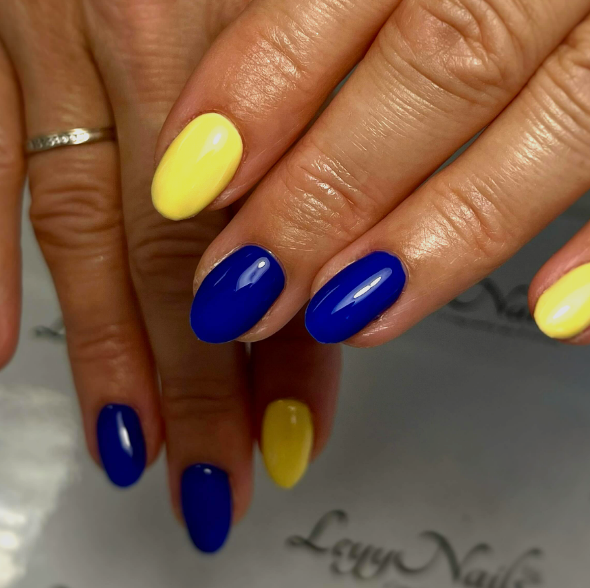
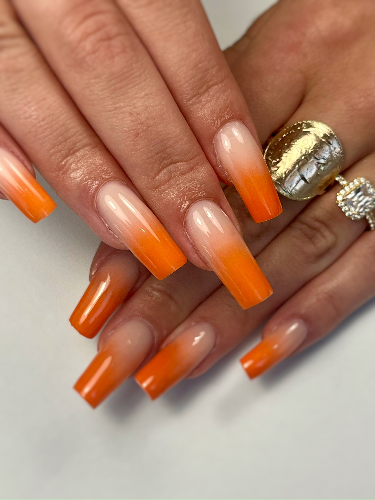
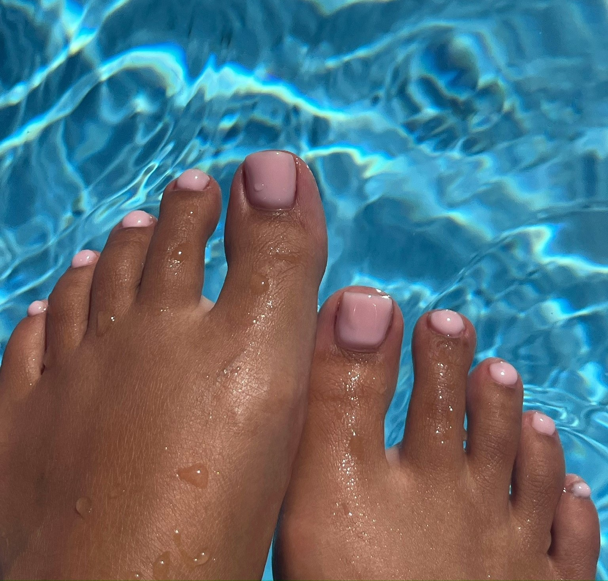

Ongle naturel
Semi-permanent renforcé
Une couleur durable sur ongle naturel avec renforcement.
DécouvrirOnglerie avec Lucy
Lucy exerce en indépendante au sein de Florida Coiffure. Ses prestations sont réglées séparément, en espèces ou par chèque.

01 · Mains
Ongle naturel
Une couleur durable sur ongle naturel avec renforcement.
Découvrir
Renforcement
Renforcer la plaque naturelle et construire une forme nette sans rechercher un grand rallongement.
Découvrir
Entretien
Entretien du gainage sur ongles naturels, généralement autour de 3 à 4 semaines selon la repousse.
Découvrir
Longueur
Rallongement et construction selon la longueur naturelle, la forme et le résultat souhaité.
Découvrir
Correction
Une reconstruction courte et naturelle pour redonner forme et un peu de longueur.
Découvrir
02 · Pieds

Pieds
Couleur ou french sur ongles naturels, avec préparation adaptée à la zone.
DécouvrirCorrection
Une option de reconstruction peut être proposée lorsqu’un ongle de pied nécessite une correction esthétique.
Découvrir
Entretien
Retrait de l’ancienne matière dans un créneau prévu, avant une nouvelle pose si nécessaire.
Découvrir03 · Formules
Finitions
French, couleur, détails graphiques ou effets : choisissez d’abord la prestation principale puis ajoutez le niveau de nail art correspondant au temps de réalisation souhaité.